april 2005
PID controller, fast 24 bit math
Introduction
By coincidence I needed to control several postion motor systems (ranging from 0.2 W to 2.5 kW, with position and/or tacho feedback) with PIC/JAL. So the logical choice was to design a general PID controler library. Building and testing this library costed me much more trouble then I estimated. There's a lot information on the web about PID controllers, and you can find some information about PID controllers with micro-controllers. Most of the information is pure theoretical, and if you find 10 documents, you'll end up with 10 different PID algoritms. The more practical articles often stops at PI or PD and/or are so dedicated to the actual system under control that they don't appeal to your situation. Tuning of a PID algoritm seems to be a profession on it's own.
This page describes some of the experiences with a PIC/JAL controlled PID-controler. It's mainly intended as an extension of my own memory, but maybe some other people may benefit from it. The approach will be a very practical one, and I hope to realize the following goals (it may seems strange to write in this order, but I don't like to write anything down when it's ready and functioning)
When I read a dozen of those articles, I thought I refreshed my control knowledge enough to implement the PID controler in practice. And indeed I succeeded in controling one of the systems, very good and stiff. But forgetting to write down the settings, the next day I couldn't reproduce the result anymore. So the following question arrised:
And of course "where should I start" to solve all these questions ?
Thé PID algoritm
There's no such thing as "the PID algoritm". There are a whole bunch of networks / formulas possible to realize a PID algoritm. Each network can be described in a number of different ways, nice for education but too difficult for me. So I'll try to describe the PID algoritme in a common sense way.
I've chozen a formula, that on one hand explains as clearly as possible how the controler will behave and on the other hand will be easy to realize in a PIC.
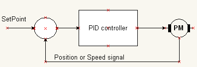
PID-control-signal = Kp * Error - Kd * (dError/dt) + Ki * integral(Error)
Proportional-action Kp
The proportional term Kp is just the open loop gain of the PID controller. Kp amplifies the error signal, which is the difference between the definied SetPoint and the realized position / or speed. By increasing the open loop gain Kp, the performance of the system with feedback will be improved and all system paramters, like speed of moving to the SetPoint, overshoot and final Error will improve.
For some systems it will be good enough to only use a proportional term: if you can increase the gainfactor Kp enough to satisfy your demands on the system performances, stop here and don't add any I or D actions !!
If you've to increase the proportional gain too much, the system will become unstable. This is caused by phase shift at some higher frequencies. Most physical systems will have a decreasing gain and an increasing phase shift for higher frequencies. So there will be higher frequencies with a phase shift of 180 degrees, which get's a gain of 1, if the proportional term is increased enough. Here the differential term Kd comes to help.
Let's take a look at a practical example, the figures below are taken from the same system (A). The system consists of a heavy loaded motor (large inertia) and a feedback loop on the base of a position potmeter. Attentional readers may notice that the rising and falling edge is different, which is caused by gravity (lifting arm).
We find the stepresponse in the left picture much too slow, so we want to increase the proportional gain Kp. Doubling the proportional gain, leads to the picture on the right. Indeed the rise- and fall-time are improved, but the system has become totally unstable. So either we can except the rise- and fall-times of the left settings or we've to add differential action into the controller. Another option would be to use a motor with a higher torque.
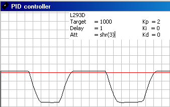 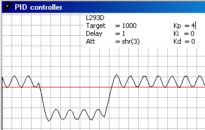
Differential-action Kd
The differential term has a negative sign. Looking at the rising edge of the stepresponse, the proportional term Kp is moving the output up, while the differential term is moving the output down. So the resulting driving force is something like Kp - Kd. On approaching the Setpoint, the force induced by Kp tends to zero, and thus only Kd will remain, which is negative or in other words active breaking. This will damp the overshoot or oscillation.
In the figure below on the left, Kp=4 (same as the picture above on the right), but due to a Kd=4 the oscillation is damped. Increasing Kd further upto 8, as is shown in the picture on the right, removes the overshoot almost completly. So here you can see how the rise time is increased, while the system remains stable. It's not only the risetime that's improved, but overall performance is increased, for example the stiffness of the system is much better.
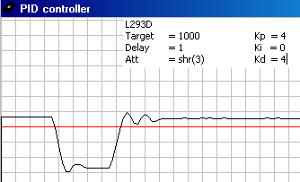 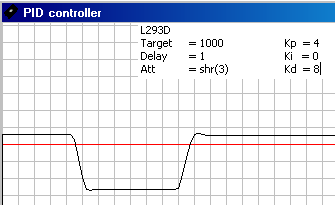
So now you can increase Kp and Kd (simultanously) until the system gets unstable again. For this system Kp=5, Kd=12 seems to be the limit. Increasing one of the 2 parameters further will make the system unstable.
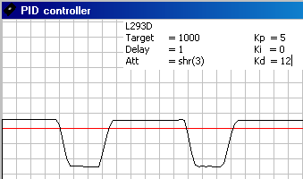
There's one other problem to be aware of when using a differential term. Differentating is very sensitive to noise, so some filtering or other noise reduction is necessary.
Integral-action Ki
The main task of the integral term Ki is to eleminate the final error. If a small error exists, the PD controler may generate too little driving force, to move the system to the desired setpoint. With a small steady state error, the integral term will gradually increase the driving power, until the system moves exactly to the desired setpoint.
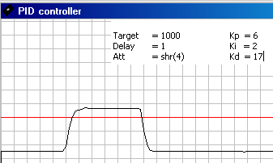
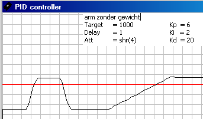 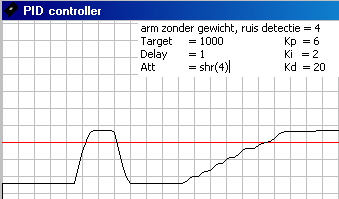
Noise Reduction for the differential term makes a slow movement less smooth (picture on the right)
randje van oscilleren
nu met ruisonderdrukking in Kd
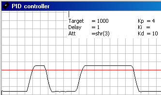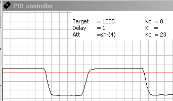
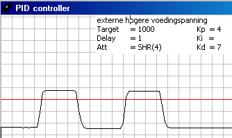
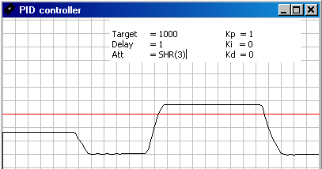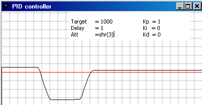
Gaat op zich met voldoende snelheid naar eindpositie,
maar voelt zeer slap aan en produceert geluid in de eindstand
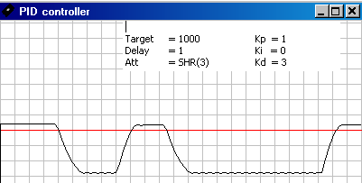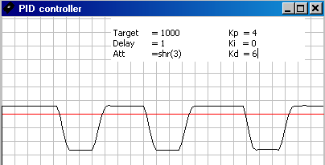
Voelt iets sterker aan
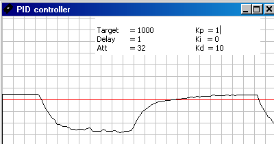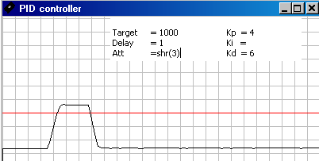
Oscilleert
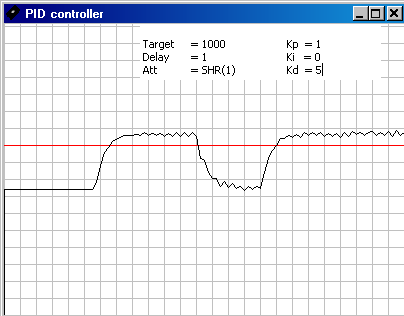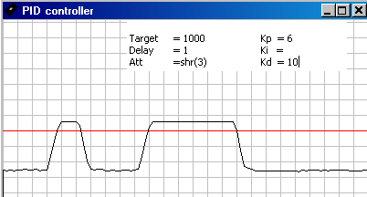
oscilleert
Introduction
Building a fast PID controller in software, with an overall accuracy of about 12 bits (dictated by the available hardware), I needed fast 24 bit math.
The general formula for a PID controller
PID = Kp * Error + Kd * (Error - PreviousError) + Ki * IntegralError
In this formula error terms are in the range [-12bits ... +12bits] = 13 bits and Kp, Kd, Ki are in the range of [-1 ... +1].
Integer math has the advantage of being faster then floating point math, and it's more easier to control the accuracy there where you need it. Now for integer math, it's more convenient to rewrite the general PID formula like this:
PID = ( 1 / Ko ) * ( Kp * Error + Kd * (Error - PreviousError) + Ki * IntegralError )
Where Ko is some nice factor (power of 2, so dividing becomes just shifting) large enough to deal with the maximum ratios of Kp, Kd, Ki. A first shot would be to make Ko 2^5 or 2^6, so the maximum ratio between K-factors can be as large as 32 or 64. For this moment we take Ko = 2^5.
Because all K-factors are in the range of [-1 ... +1], we need 5 bits plus a sign bit = 6 bits for the K-factors.
For PID * Ko, we have 3 terms (is 2 bits), each consisting of a multiplication of an errorterm of 13 bits and a K-factor of 6 bits, so in totally we need 21 bits (consisting of 20 bits magnitude and a sign bit).
Thus calculating in 24 bits is perfect suited for this problem.
Now we have to choose what number representation(s) we are going to use, and here are some possibilities:
An interesting feature to notice is, because we're not using all the 24 available bits, we can recognize each number representation by the most left 2 bits.
Notation <--> Operation
For addition the most convenient representation is 2-complement. Just do the addition and the result is always ok, with a minimum number of instructions.
For subtraction, basicaly yields the same as for addition. But as subtraction is somewhat more time consuming then addition it might worth to replace a subtraction by a combination of inverting the second operand and then performing an addition ??
Multiplication is done most effectively on positive numbers only. Knowing that one of the operands is at largest 6 bits, a multiplication on positive numbers only, would mean a maximum of 6 addtions. If the second operand would be a 2-complement negative number, you could end up with a maximum of 24 additions.
Rounding
The last operation to perform is a whole division (or shift right) operation. Positive numbers can be rounded very easy because after shifting you just have to look to the state of the carry, and if it's 1, increment the result by 1.
Another way of doing its (yielding about equal time undependant of the rounding) is to add 0.5, prior to performing the whole division.
Negation
...
Representation Conversion
....
theory
There are several methods for tuning a PID loop. The choice of method will depend largely on whether or not the loop can be taken "offline" for tuning, and the response speed of the system. If the system can be taken offline, the best tuning method often involves subjecting the system to a step change in input, measuring the output as a function of time, and using this response to determine the control parameters.
If the system must remain online, one tuning method is to first set the I and D values to zero. Increase the P until the output of the loop oscillates. Then increase I until oscillation stops. Finally, increase D until the loop is acceptably quick to reach its setpoint. The best PID loop tuning usually overshoots slightly to reach the set-point more quickly, however some systems cannot accept overshoot.
Increase Kp until oscillates (60% of stroing oscillations)
Increase Kd until nice step
Ki = 1 /Kd
Effects of changes in parameters
|
Parameter |
Rise Time |
Overshoot |
Settling Time |
Final Error |
|
P |
Decrease |
Increase |
- |
Decrease |
|
I |
Decrease |
Increase |
Increase |
Eliminate |
|
D |
- |
Decrease |
Decrease |
- |
Another tuning method is formally known as the "Ziegler-Nichols method". It starts in the same way as the method described before: first set the I and D gains to zero and then increase the P gain until the output of the loop starts to oscillate. Write down the critical gain (Kc) and the oscillation period of the output (Pc). Then adjust the P, I and D controls as the table shows:
Ziegler-Nichols method
Control P Tr Td
P 0,5·Kc - -
PI 0,45·Kc Pc/1,2 -
PID 0,6·Kc Pc/2 Pc/8
[edit]
P
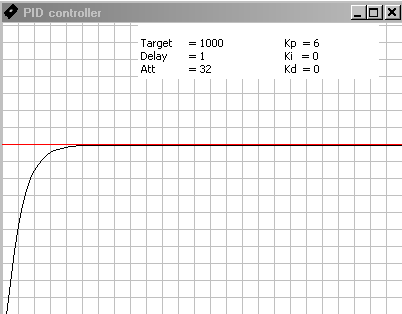
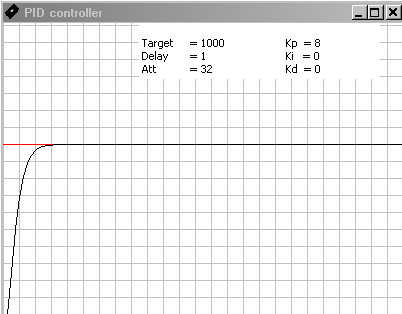
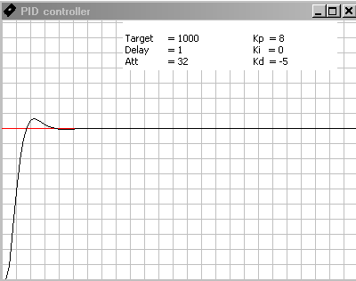
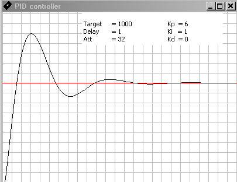
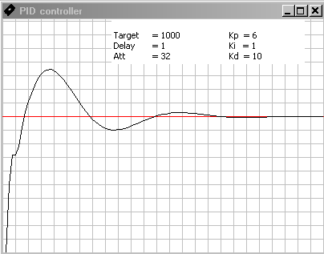
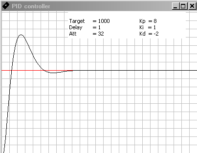
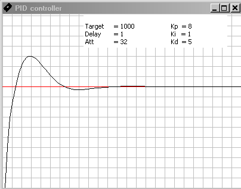
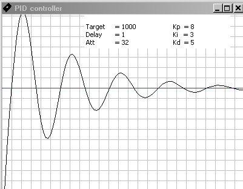
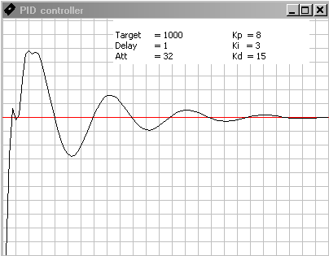
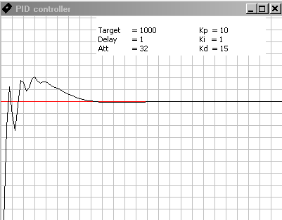
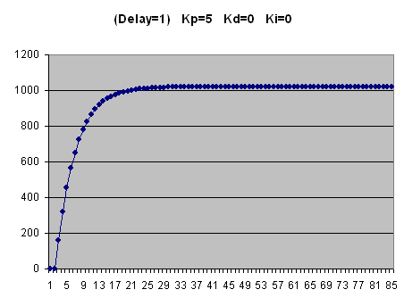
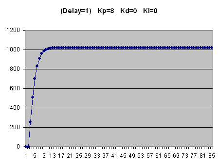
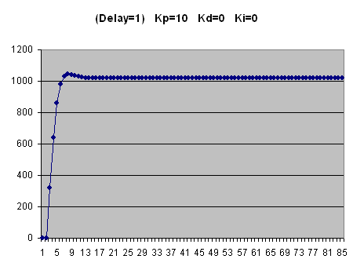
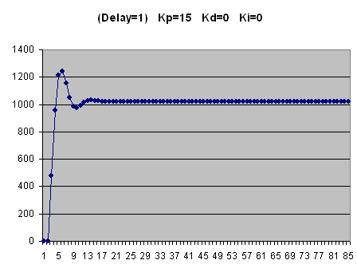
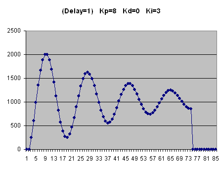
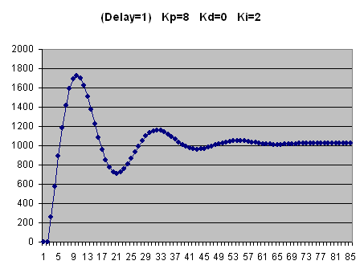
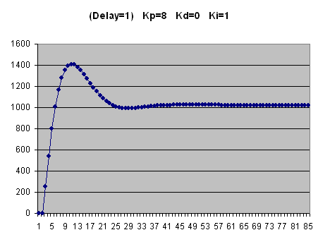
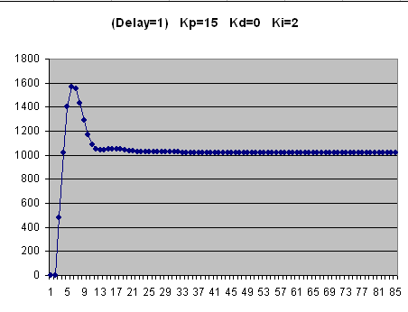
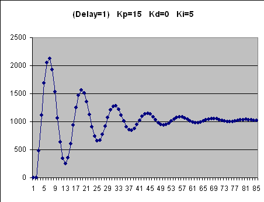